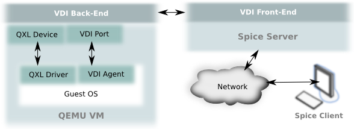

前言
之前写了一篇文章 简洁代码之道（1）：用多态替代条件语句，有人问实现多态的时候为什么用抽象类而不是接口。当时写文章的时候并没有想到这个问题。后来仔细想想，这的确是个值得探讨的问题。多态可以用抽象类或者接口实现，重点是应该用哪个？更大问题是，接口和抽象类有什么本质的区别？下面我们将讨论以下的问题：
- 抽象类和接口的对比
- 从 java 容器类的设计讨论抽象类和接口的应用
- 抽象类和接口的使用时机
之前写了一篇文章 简洁代码之道（1）：用多态替代条件语句，有人问实现多态的时候为什么用抽象类而不是接口。当时写文章的时候并没有想到这个问题。后来仔细想想，这的确是个值得探讨的问题。多态可以用抽象类或者接口实现，重点是应该用哪个？更大问题是，接口和抽象类有什么本质的区别？下面我们将讨论以下的问题：
本文是我看了 谷歌简洁代码演讲系列 中的 全局状态与单例模式 之后的总结。本文的主题是：避免全局可变状态。下面我们将围绕几个问题开展讨论：
本文是我看了 谷歌简洁代码演讲系列 中的 多态和条件语句 的总结。大部分的条件语句是可以用多态代替的，本文将围绕以下问题开展：
最近在学习Spring框架，它的核心就是IoC容器。要掌握Spring框架，就必须要理解控制反转的思想以及依赖注入的实现方式。下面，我们将围绕下面几个问题来探讨控制反转与依赖注入的关系以及在Spring中如何应用。
在上一篇文章Linux内存寻址之分段机制中，我们了解逻辑地址通过分段机制转换为线性地址的过程。下面，我们就来看看更加重要和复杂的分页机制。
分页机制在段机制之后进行，以完成线性—物理地址的转换过程。段机制把逻辑地址转换为线性地址，分页机制进一步把该线性地址再转换为物理地址。
最近在学习Linux内核，读到《深入理解Linux内核》的内存寻址一章。原本以为自己对分段分页机制已经理解了，结果发现其实是一知半解。于是，查找了很多资料，最终理顺了内存寻址的知识。现在把我的理解记录下来，希望对内核学习者有一定帮助，也希望大家指出错误之处。
本文基于 ucore 操作系统实验,简要分析操作系统的启动流程.
ucore 操作系统是清华大学用于操作系统教学实验的OS，参考了 MIT 的 JOS，哈佛的 OS161 以及 Linux 系统。我们可以通过这个迷你操作系统在代码层面上理解操作系统的思想。
ucore labs was used as OS Experiments in OS Course Of Dept. of Computer Science & Technology, Tsinghua University. ucore is a teaching OS which is derived from xv6&jos in MIT, OS161 in Harvard and Linux.
看源代码是一个程序员必须经历的事情,也是可以提升能力的一个捷径.个人认为: 要完全掌握一个软件的方法只有阅读源码
在Windows下有sourceinsight这个源码阅读软件(虽然我没用过,但是网上评价还不错),由于我是个Linuxer,并不喜欢用Windows,所以自然是选择在Linux下阅读源码的工具了.
下面我将逐一介绍在Linux下阅读源码的工具.
前言:本文是结合我自己阅读代码的心得总结而来,同时会忽略很多细节,只能作为阅读源码时的参考.如有错误,欢迎指正.
Spice是一个开源的云计算解决方案，使客户端能显示远程虚拟主机的操作界面并且使用其设备，如键盘，鼠标，声音等。Spice给用户提供了一种如同操作本地机器一样的体验，同时尽可能把密集的CPU和GPU任务在客户端上执行。Spice能在局域网和互联网间使用，而不减少用户体验。

我们知道，开发程序的基本流程是：设计-代码编写-编译-链接-执行
每一个步骤展开都是一个很大的课题，链接是一个被人忽略的课题，因为它并不是很复杂，相对于编译来说它还是比较简单的，但是并不代表它不重要。
现在编译链接的环节基本上由IDE帮助我们完成了，于是我们很少关注编译链接。虽然说不懂编译链接对开发程序并没有很大影响，但是如果要成为大牛，计算机底层的知识还是要掌握的。
编译的知识很多，不是几篇文章能说完的，推荐看《编译原理》。
这篇文章以及几篇相关的文章将参考《深入理解计算机系统》这本书，对链接作一些介绍。